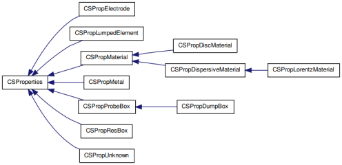
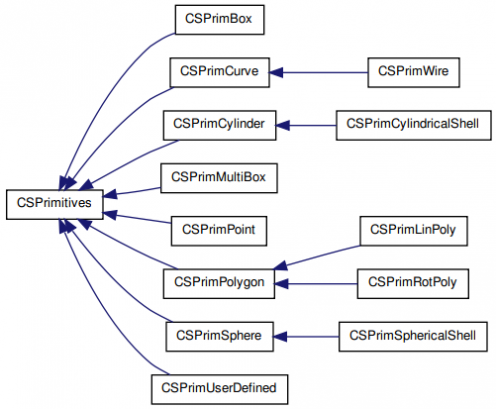

CSXCAD
From openEMS
Contents |
CSXCAD - Continuous Structure XML
A C++ library to describe geometrical objects and their physical or non-physical properties.
Features
- Extensive and simple file I/O (xml-based)
- Flexible and mesh independent geometry definitions
- Rectilinear grid support and discretized property access
- Extensive Matlab interface
- Open source license (LGPLv3)
CSProperties
Properties contain the physical (e.g. material properties) and non-physical (e.g. dump-boxes) properties. Each Property can contain one or more geometrical primitives (e.g. a cube or cylinder).

 Inheritance graph for CSProperties
Inheritance graph for CSProperties
Currently there are several different properties that can be used by openEMS:
physical properties:
- CSPropMaterial: Material definition (Matlab: AddMaterial)
- CSPropDiscMaterial: Discretized material definition (e.g. a virtual family model)
- CSPropMetal: Define PEC metal (Matlab: AddMetal)
- CSPropLorentzMaterial: Drude/Lorentz dispersive Material (have a look at examples/other/Metamaterial_PlaneWave_Drude.m)
- CSPropLumpedElement: Lumped elements such as resistors and capacitors
non-physical properties:
- CSPropElectrode: Define the excitation (Matlab: AddExcitation)
- CSPropProbeBox: Voltage/Currents probe definitions
- CSPropDumpBox: field dump boxes
CSPrimitives
Each primitive has to be assign to an existing property.

Inheritance graph for CSPrimitives
Currently there are several primitives defined:
- CSPrimPoint: A point defined by its coordinates (Matlab: AddPoint)
- CSPrimBox: A rectangular cube, plane, line or point defined by its lower-left-bottom and upper-right-top edge (Matlab: AddBox)
- CSPrimCylinder: A cylinder is defined by its axis and radius (Matlab: AddCylinder)
- CSPrimCylindricalShell: A cylinder with a given shell width (Matlab: AddCylindricalShell)
- CSPrimSphere: A sphere is defined by its center and radius (Matlab: AddSphere)
- CSPrimSphericalShell: A sphere with a given shell width (Matlab: AddSphericalShell)
- CSPrimCurve: A 1D curved line (Matlab: AddCurve)
- CSPrimWire: A curve with a finite radius (Matlab: AddWire)
- CSPrimPoly: A 2D polygon (Matlab: AddPolygon)
- CSPrimLinPoly: An extruded 2D polygon (Matlab: AddLinPoly)

{kind=link}
{kind=link}